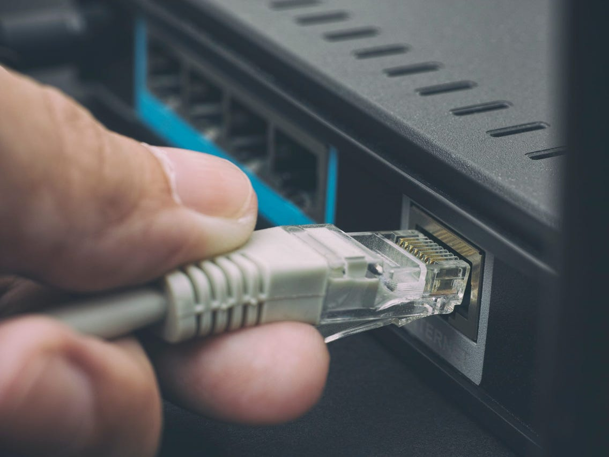

Ethernet is a family of wired computer networking technologies commonly used in local area networks (LAN), metropolitan area networks (MAN) and wide area networks (WAN).
It was commercially introduced in 1980 and first standardized in 1983 as IEEE 802.3. Ethernet has since been refined to support higher bit rates, a greater number of nodes,
and longer link distances, but retains much backward compatibility.
Over time, Ethernet has largely replaced competing wired LAN technologies such as Token Ring, FDDI and ARCNET.
The original 10BASE5 Ethernet uses coaxial cable as a shared medium, while the newer Ethernet variants
use twisted pair and fiber optic links in conjunction with switches. Over the course of its history,
Ethernet data transfer rates have been increased from the original 2.94 megabits per second (Mbit/s)
to the latest 400 gigabits per second (Gbit/s). The Ethernet standards comprise several wiring and
signaling variants of the OSI physical layer in use with Ethernet.
Ethernet was developed at Xerox PARC between 1973 and 1974. It was inspired by ALOHAnet, which Robert
Metcalfe had studied as part of his PhD dissertation. The idea was first documented in a memo that
Metcalfe wrote on May 22, 1973, where he named it after the luminiferous aether once postulated to
exist as an "omnipresent, completely-passive medium for the propagation of electromagnetic waves.
In 1975, Xerox filed a patent application listing Metcalfe, David Boggs, Chuck Thacker, and Butler
Lampson as inventors. In 1976, after the system was deployed at PARC, Metcalfe and Boggs published
a seminal paper.[10][a] Yogen Dalal,Ron Crane, Bob Garner, and Roy Ogus facilitated the upgrade
from the original 2.94 Mbit/s protocol to the 10 Mbit/s protocol, which was released to the market in 1980.
Metcalfe left Xerox in June 1979 to form 3Com.He convinced Digital Equipment Corporation (DEC),
Intel, and Xerox to work together to promote Ethernet as a standard. As part of that process Xerox agreed
to relinquish their 'Ethernet' trademark. The first standard was published on September 30, 1980 as
"The Ethernet, A Local Area Network. Data Link Layer and Physical Layer Specifications". This so-called
DIX standard (Digital Intel Xerox)[16] specified 10 Mbit/s Ethernet, with 48-bit destination and source
addresses and a global 16-bit Ethertype-type field. Version 2 was published in November, 1982
and defines what has become known as Ethernet II. Formal standardization efforts proceeded at the same
time and resulted in the publication of IEEE 802.3 on June 23, 1983.
- Evolution
Ethernet has evolved to include higher bandwidth, improved medium access control methods, and different physical media.
The coaxial cable was replaced with point-to-point links connected by Ethernet repeaters or switches.
Ethernet stations communicate by sending each other data packets: blocks of data individually sent and delivered.
As with other IEEE 802 LANs, adapters come programmed with globally unique 48-bit MAC address so that each Ethernet
station has a unique address. The MAC addresses are used to specify both the destination and the source of each
data packet. Ethernet establishes link-level connections, which can be defined using both the destination and source
addresses.
On reception of a transmission, the receiver uses the destination address to determine whether the transmission is
relevant to the station or should be ignored. A network interface normally does not accept packets addressed to
other Ethernet stations
- Shared media
Ethernet was originally based on the idea of computers communicating over a shared coaxial cable acting as a broadcast
transmission medium. The method used was similar to those used in radio systems,with the common cable
providing the communication channel likened to the Luminiferous aether in 19th-century physics,
and it was from this reference that the name "Ethernet" was derived.
Original Ethernet's shared coaxial cable (the shared medium) traversed a
building or campus to every attached machine. A scheme known as carrier sense multiple access with
collision detection (CSMA/CD) governed the way the computers shared the channel. This scheme was simpler
than competing Token Ring or Token Bus technologies. Computers are connected to an Attachment Unit
Interface (AUI) transceiver, which is in turn connected to the cable (with thin Ethernet the transceiver
is usually integrated into the network adapter). While a simple passive wire is highly reliable for small
networks, it is not reliable for large extended networks, where damage to the wire in a single place, or a
single bad connector,
can make the whole Ethernet segment unusable
- Repeaters and hubs
For signal degradation and timing reasons, coaxial Ethernet segments have a restricted size.
Somewhat larger networks can be built by using an Ethernet repeater. Early repeaters had only
two ports, allowing, at most, a doubling of network size. Once repeaters with more than two ports
became available, it was possible to wire the network in a star topology. Early experiments with star
topologies (called "Fibernet")
using optical fiber were published by 1978.